GGally
データ分析を行うにあたってデータの分布を確認しておくことは重要なポイントのひとつです。データの分布を確認する基本的な方法としては、ヒストグラム、箱ひげ図、散布図などありますが、データ項目が多いとグラフを描くのも一苦労です。そこで、利用したいのが複数のグラフを一度に描けるGGallyパッケージです。ただし、ペアプロットの場合、描くグラフの数がデータ項目数の二乗個になりますのでデータ項目数が多いとかなりの処理時間がかかることに注意してください。
必要なパッケージ
本ページのコードを実行するには標準パッケージ以外に以下の追加パッケージを読み込んでおく必要があります。
| Package | Description |
|---|---|
| tidyverse | Easily Install and Load the ‘Tidyverse’ |
| GGally | Extension to ‘ggplot2’ |
対象データ
以下のデータセットを用います。
| Dataset | Package |
|---|---|
| iris | datasets |
| mtcars | datasets |
| diamonds | ggplot2 |
ペアプロット
psych::pairs.panels関数が描く相関係数付きの散布図行列（ペアプロット）はデータを俯瞰するのに便利です。
iris %>%
psych::pairs.panels()
ggplot2ベースのペアプロットを描きたい場合は様々なペアプロットが描けるGGally::ggpairs関数が便利です。
iris %>%
GGally::ggpairs()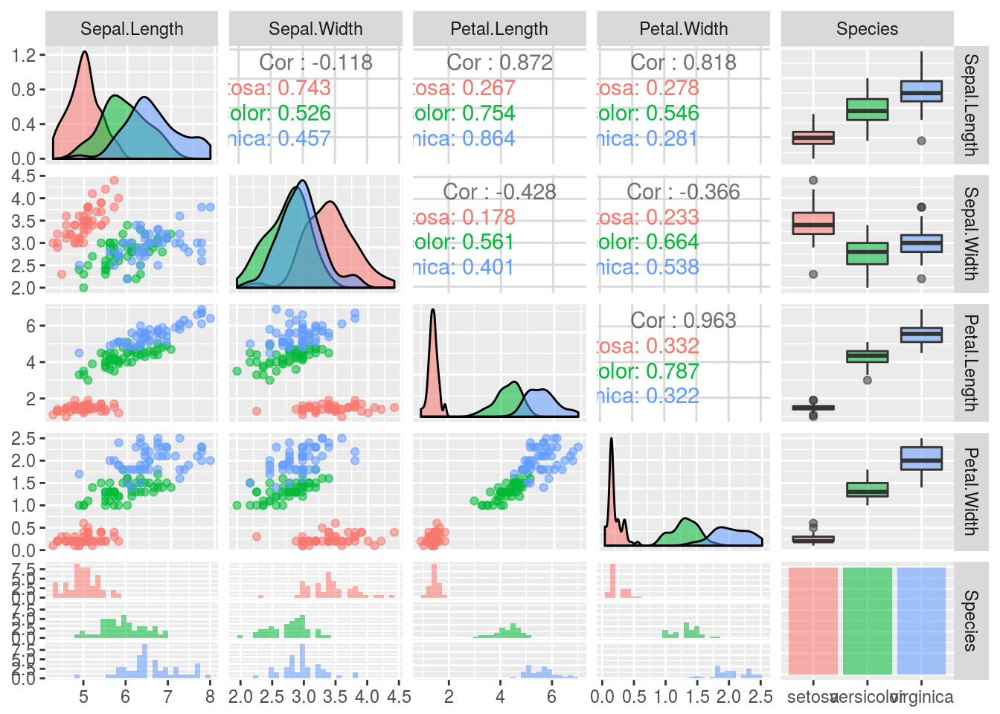
ggplot2パッケージがベースなのでggplot2パッケージの関数と同様の指定が可能です。例えばSpeciesで層別して色分けしたい場合はggplot2パッケージと同様にggplot2::aes関数を用います。
iris %>%
GGally::ggpairs(ggplot2::aes(colour = Species, alpha = 0.5))
GGally::ggpairs関数に引数を渡すことで散布図に回帰直線を描くこともできます。
iris %>%
GGally::ggpairs(lower = list(continuous="smooth"),
ggplot2::aes(colour = Species, alpha = 0.5))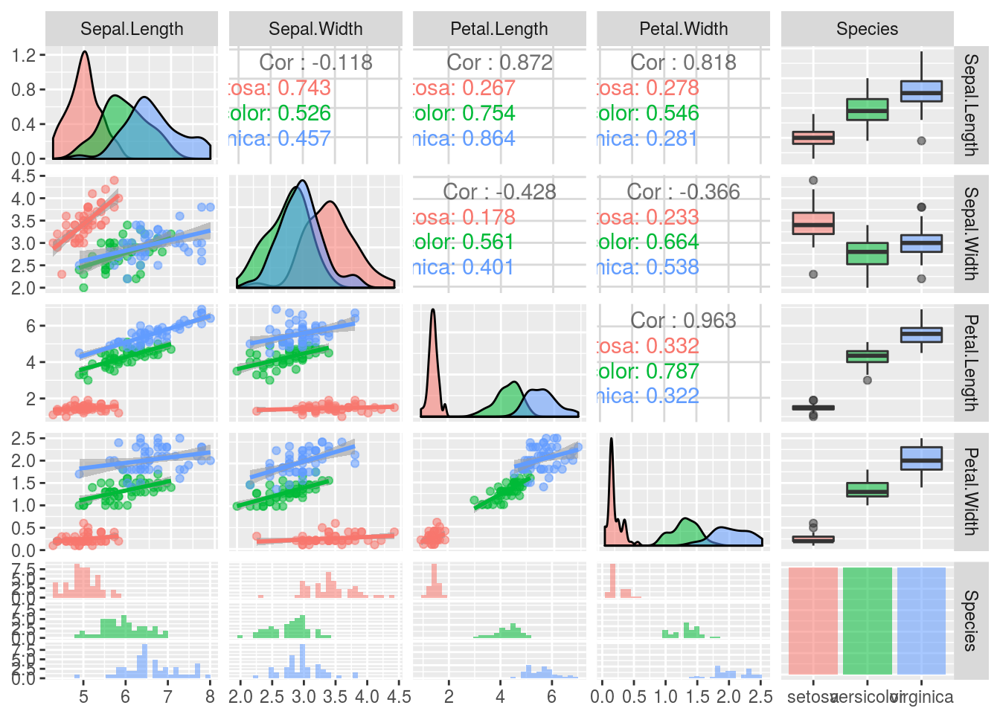
様々なペアプロット
GGally::ggpairs関数は対角の上側（upper）と下側（lower）、対角線上（diag）の三つのエリアに対して以下のパラメータを指定することで様々なペアプロットを描くことが可能です。
| parameter | upper/lower | diag |
|---|---|---|
| conrinuous | points, smooth, smooth_loess, density, cor, blank | densityDiag, barDiag, blankDiag |
| combo | box, box_no_facet, dot, dot_no_facet, facethist, facetdensity, denstrip, blank | |
| discrete | facetbar, ratio, blank | barDiag, blankDiag |
| na | na, blank | naDiag, blankDiag |
continuousパラメータ
continuousは連続量に対して有効なオプションでupper/lowerとdiagに指定できますが、upper/lowerに指定できる値とdiagに指定できる値は異なります。指定した値はタイトルを参照してください。
| parameter | upper/lower | diag |
|---|---|---|
| conrinuous | points, smooth, smooth_loess, density, cor, blank | densityDiag, barDiag, blankDiag |
iris %>%
dplyr::select(-Petal.Length, -Petal.Width) %>%
GGally::ggpairs(title = "u:cor l:points d:densityDiag, as default")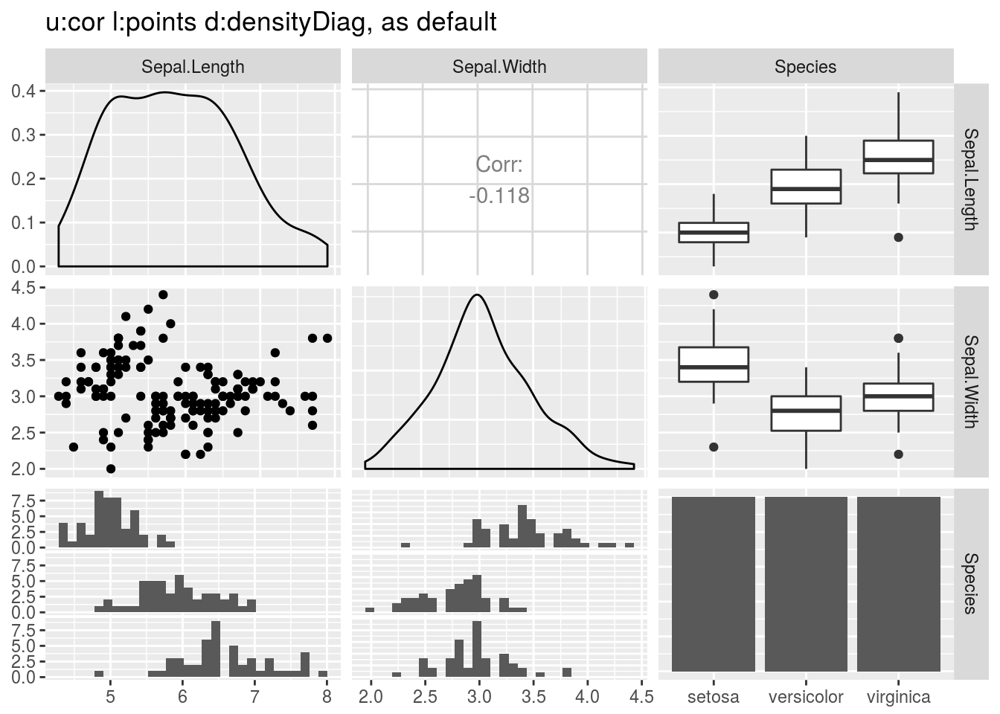
iris %>%
dplyr::select(-Petal.Length, -Petal.Width) %>%
GGally::ggpairs(upper = list(continuous = "smooth"),
lower = list(continuous = "smooth_loess"),
diag = list(continuous = "barDiag"),
title = "u:smooth l:smooth_loess d:barDiag")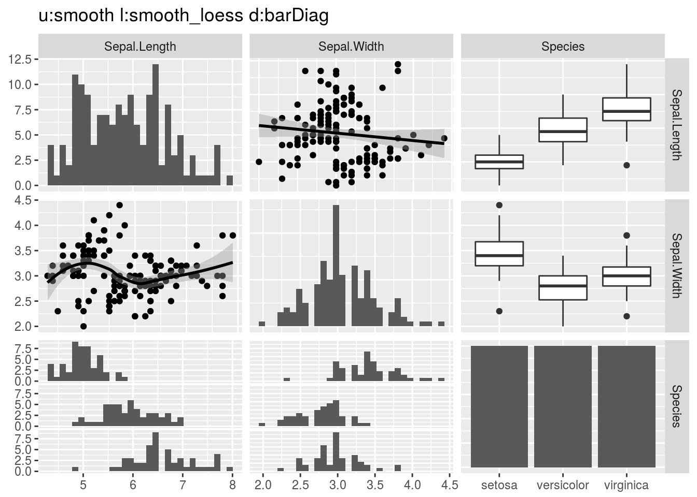
iris %>%
dplyr::select(-Petal.Length, -Petal.Width) %>%
GGally::ggpairs(upper = list(continuous = "density"),
lower = list(continuous = "cor"),
diag = list(continuous = "blankDiag"),
title = "u:density l:cor d:blankDiag")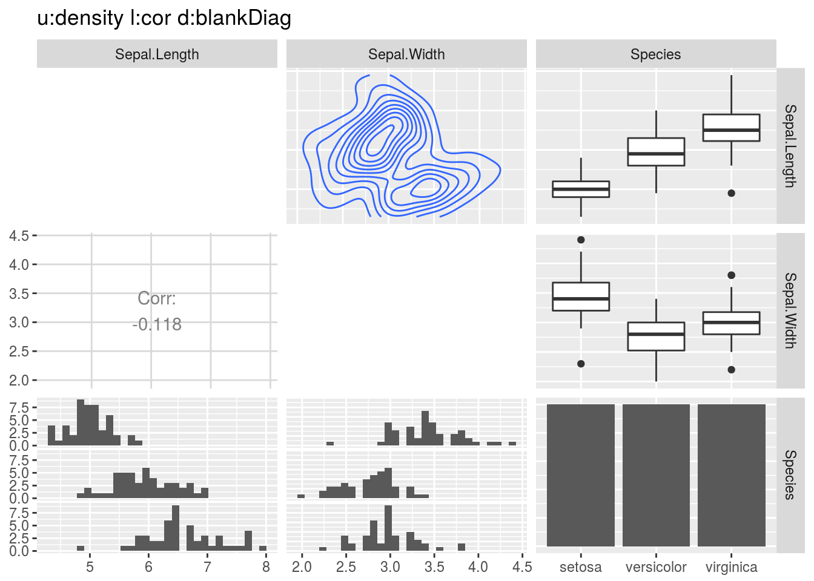
comboパラメータ
comboは因子がある場合に有効となるオプションでupper/lowerだけに指定できます。太字はデフォルト値。
| parameter | upper/lower | diag |
|---|---|---|
| combo | box, box_no_facet, dot, dot_no_facet, facethist, facetdensity, denstrip, blank | （指定不可） |
iris %>%
dplyr::select(-Petal.Length, -Petal.Width) %>%
GGally::ggpairs(title = "u:box_no_facet l:facethist, as default",
ggplot2::aes(colour = Species, alpha = 0.5))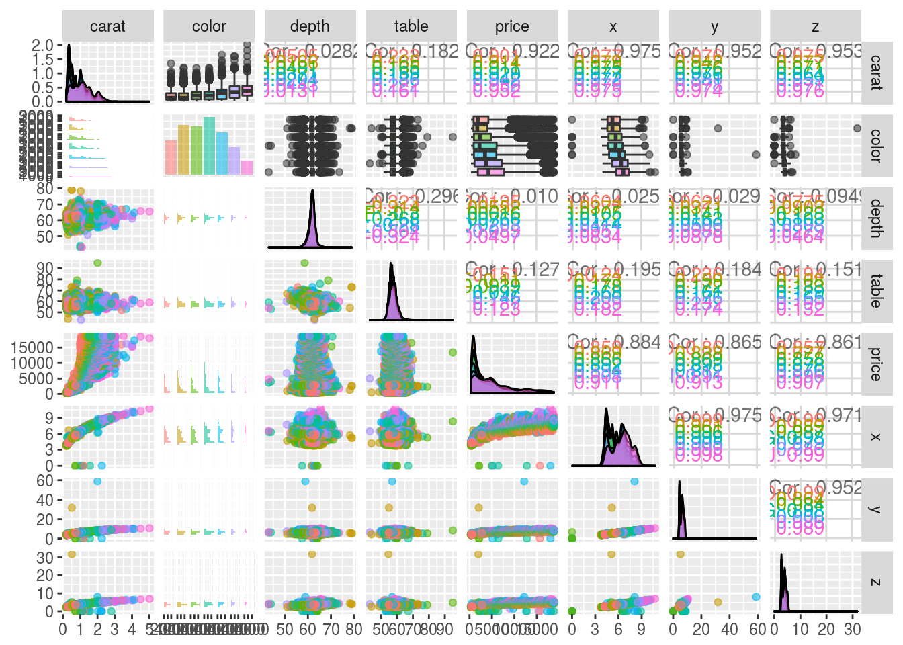
iris %>%
dplyr::select(-Petal.Length, -Petal.Width) %>%
GGally::ggpairs(upper = list(combo = "dot"),
lower = list(combo = "box"),
title = "u:dot l:box",
ggplot2::aes(colour = Species, alpha = 0.5))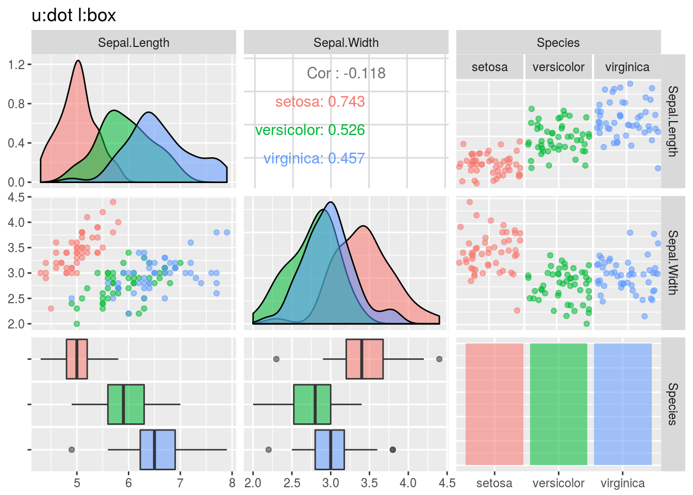
iris %>%
dplyr::select(-Petal.Length, -Petal.Width) %>%
GGally::ggpairs(upper = list(combo = "dot_no_facet"),
lower = list(combo = "facetdensity"),
title = "u:dot_no_facet l:facetdensity",
ggplot2::aes(colour = Species, alpha = 0.5))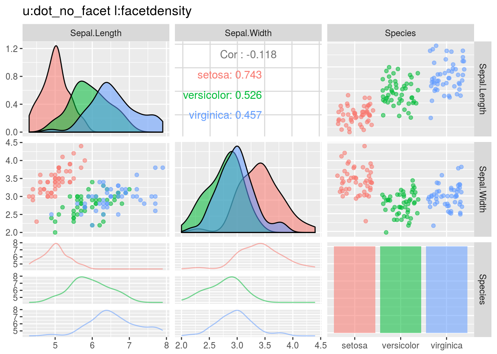
iris %>%
dplyr::select(-Petal.Length, -Petal.Width) %>%
GGally::ggpairs(upper = list(combo = "denstrip"),
lower = list(combo = "blank"),
title = "u:denstrip l:blank",
ggplot2::aes(colour = Species, alpha = 0.5))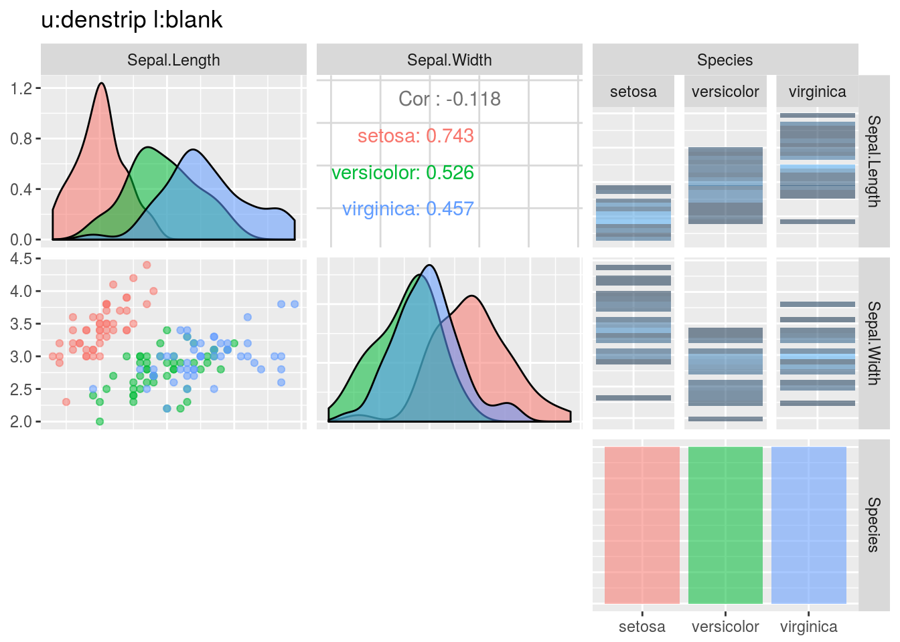
discreteパラメータ
discreteは非連続量（カテゴリカルデータ）どうしに対して有効なオプションでupper/lowerとdiagに指定できますが、upper/lowerに指定できる値とdiagに指定できる値は異なります。指定した値はタイトルを参照してください。
| parameter | upper/lower | diag |
|---|---|---|
| discrete | facetbar, ratio, blank | barDiag, blankDiag |
set.seed(50)
ggplot2::diamonds %>%
dplyr::sample_n(50) %>%
dplyr::select(carat, cut, color) %>%
GGally::ggpairs(title = "u:facetbar l:facetbar d:barDiag, as default")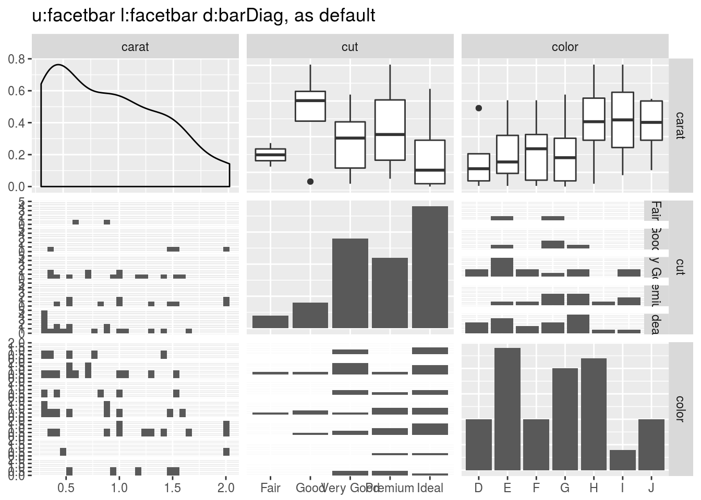
set.seed(50)
ggplot2::diamonds %>%
dplyr::sample_n(50) %>%
dplyr::select(carat, cut, color) %>%
GGally::ggpairs(upper = list(discrete = "ratio"),
lower = list(discrete = "blank"),
diag = list(discrete = "blankDiag"),
title = "u:ratio l:blank d:blankDiag")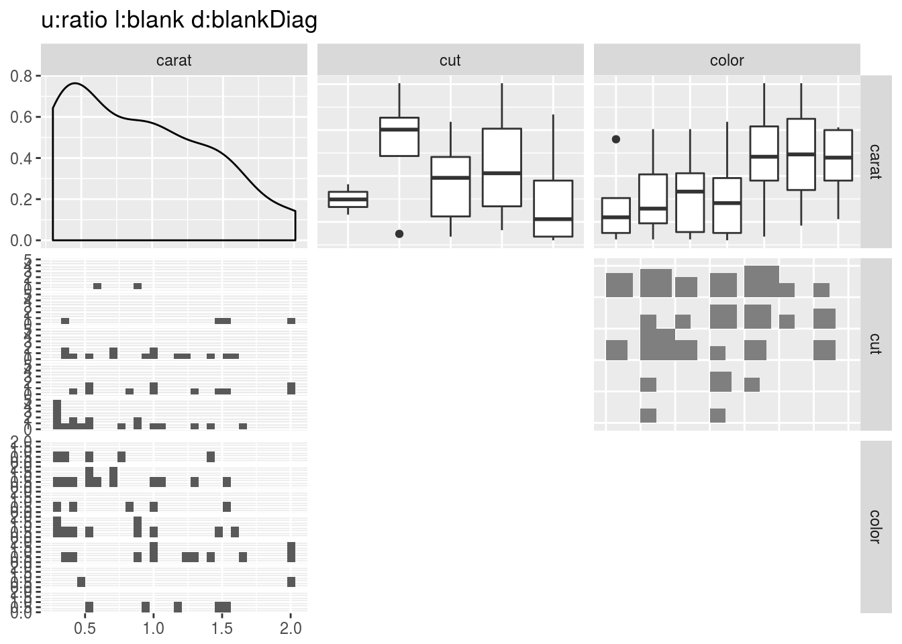
GGally::ggscatmat(flea, columns = 2:4, color="species", alpha=0.8)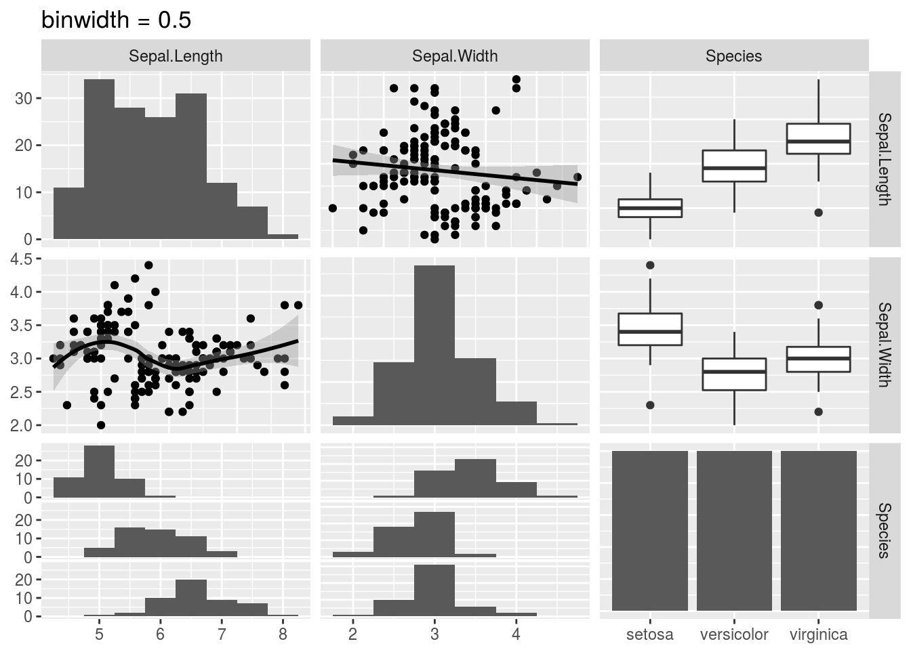
GGally::ggscatmat(iris, columns = 1:4, color="Species", alpha=0.8)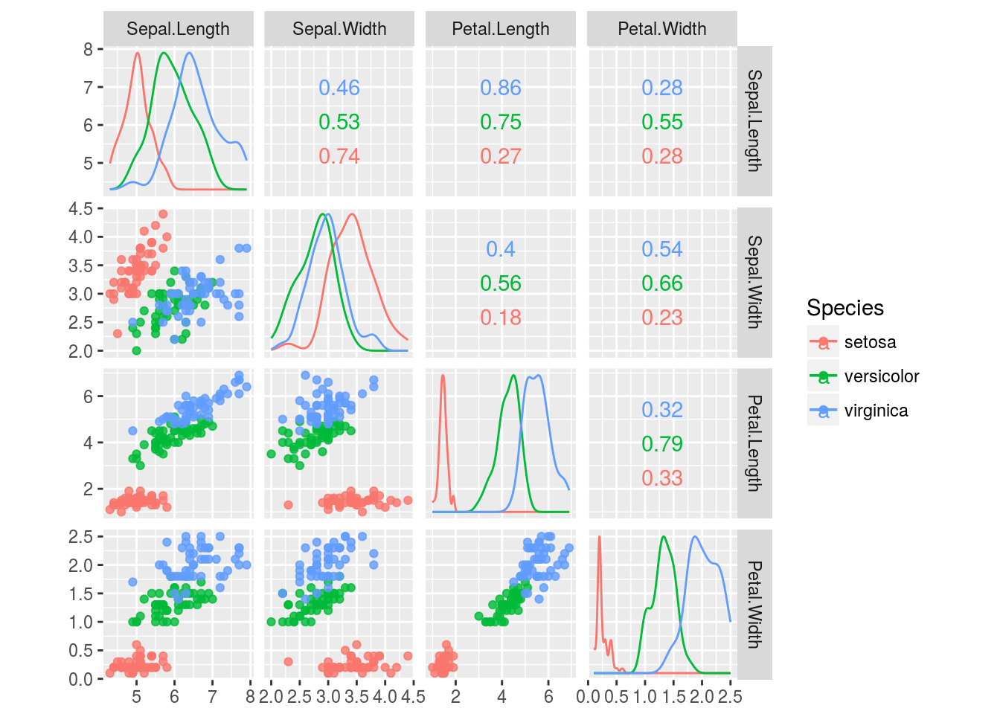
GGally::ggpairs(iris, color="Species", alpha=0.8)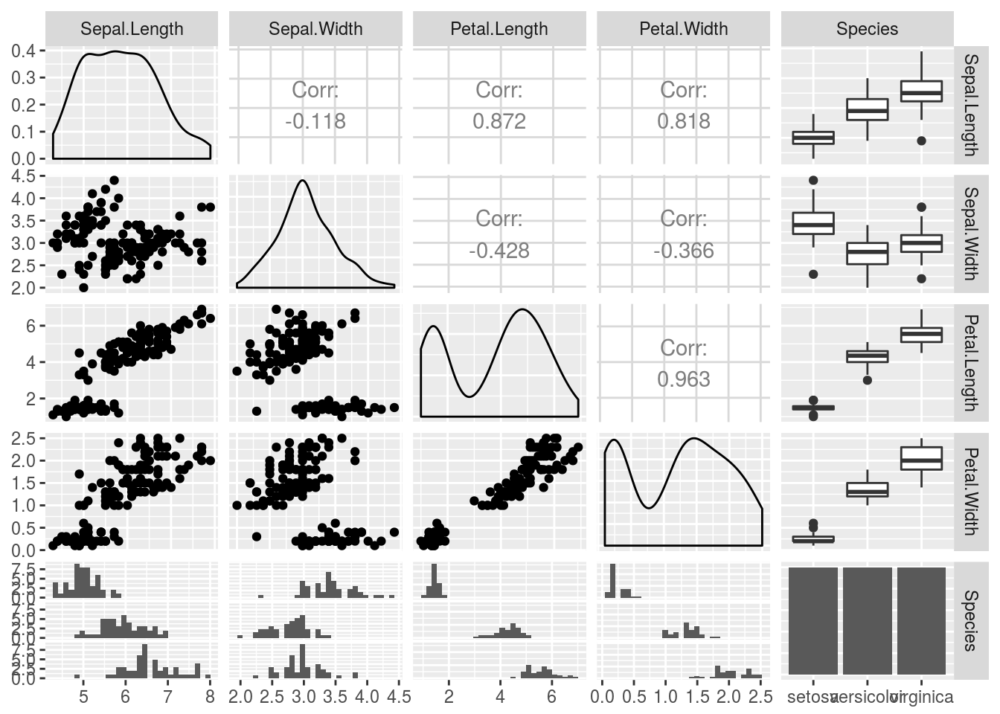
ggplot2::diamonds %>%
dplyr::sample_n(200) %>%
dplyr::select(carat, cut, color) %>%
GGally::ggpairs(upper = list(continuous = "density", combo = "box"),
lower = list(continuous = "points", combo = "dot"),
ggplot2::aes_string(color = "cut", alpha = 0.3),
title = "Diamonds")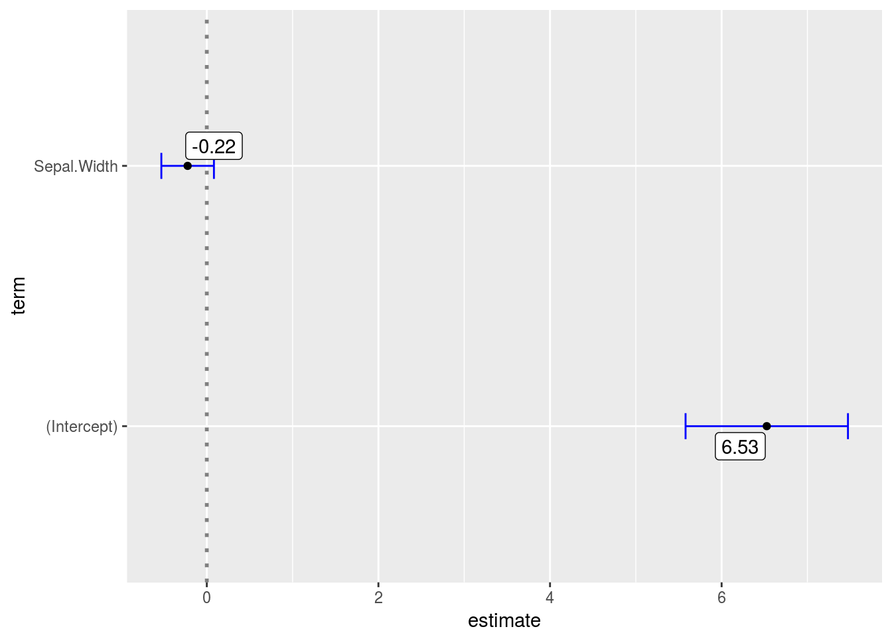
require(tidyverse)
mtcars %>%
GGally::ggpairs(mapping = aes(color = cyl),
upper = list(continuous = "smooth"), lower = list(combo = "facetdensity"),
diag = list(continuous = "barDiag"))
n <- 15
TestData <- data.frame(Group = sample(paste0("Group", 1:5), n, replace = TRUE),
Data1 = rnorm(n),
Data2 = rnorm(n) + rnorm(n) + rnorm(n),
Data3 = sample(0:1, n, replace = TRUE),
Data4 = sample(LETTERS[1:26], n, replace = TRUE))
GGally::ggpairs(data = TestData, columns = c(1, 5, 2, 3), mapping = aes(color = Group),
upper = list(continuous = "smooth"), lower = list(combo = "facetdensity"),
diag = list(continuous = "barDiag"))ggplot2::diamonds %>%
dplyr::select(-color, -clarity, -x, -y, -z) %>%
GGally::ggpairs(ggplot2::aes(colour = cut, alpha = 0.6))
ggplot2::diamonds %>%
dplyr::select(-cut, -clarity) %>%
GGally::ggpairs(ggplot2::aes(colour = color, alpha = 0.6))
ggplot2::diamonds %>%
dplyr::select(-cut, -color) %>%
GGally::ggpairs(ggplot2::aes(colour = clarity, alpha = 0.6))
ggplot2::diamonds %>%
GGally::ggpairs()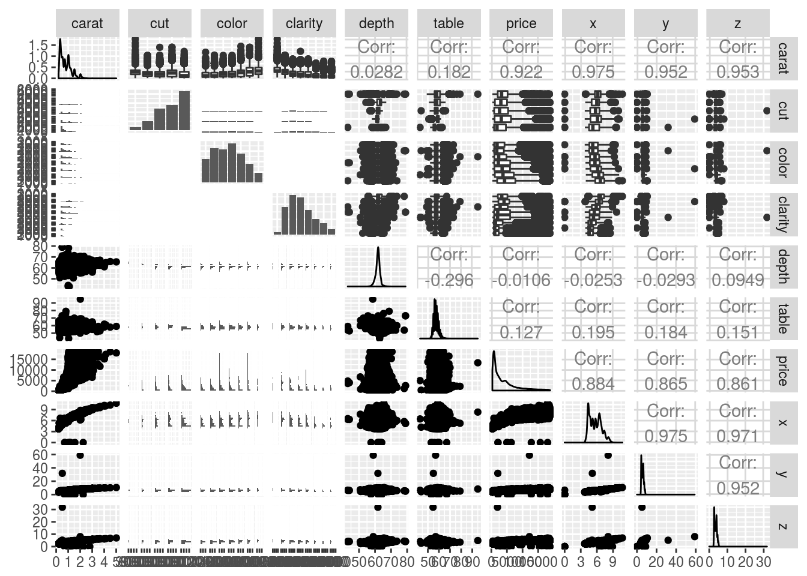
信頼区間プロット
GGally::ggcoef関数はモデルとその95%信頼区間を図示します。利用できるモデルはlmならびにglmの他にbroom::tidy関数で整然データ（tidy data）にできるモデルです。例えばirisデータセットのSepal.LengthとSepal.Width
ggplot2::mpg %>%
dplyr::select(-model) %>%
GGally::ggpairs()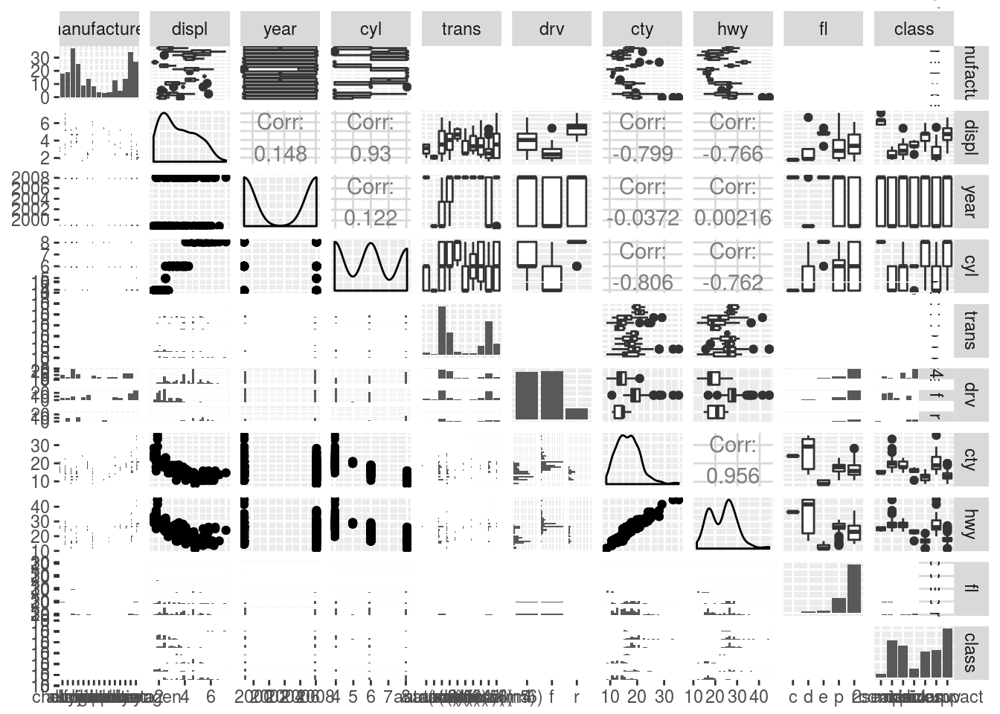
step(lm(cty ~ displ + year + cyl + trans + drv + fl + class,
data = ggplot2::mpg)) %>% summary()## Start: AIC=237.84
## cty ~ displ + year + cyl + trans + drv + fl + class
##
## Df Sum of Sq RSS AIC
## - trans 9 31.51 553.70 233.55
## <none> 522.20 237.84
## - displ 1 22.43 544.62 245.68
## - cyl 1 41.39 563.58 253.68
## - drv 2 48.53 570.72 254.63
## - year 1 52.97 575.16 258.44
## - class 6 120.96 643.15 274.59
## - fl 4 354.80 876.99 351.16
##
## Step: AIC=233.55
## cty ~ displ + year + cyl + drv + fl + class
##
## Df Sum of Sq RSS AIC
## <none> 553.70 233.55
## - displ 1 20.75 574.45 240.15
## - drv 2 55.22 608.93 251.79
## - year 1 54.36 608.06 253.46
## - cyl 1 56.75 610.46 254.38
## - class 6 142.32 696.03 275.08
## - fl 4 359.88 913.59 342.72##
## Call:
## lm(formula = cty ~ displ + year + cyl + drv + fl + class, data = ggplot2::mpg)
##
## Residuals:
## Min 1Q Median 3Q Max
## -6.5058 -0.6653 -0.0187 0.7505 6.1012
##
## Coefficients:
## Estimate Std. Error t value Pr(>|t|)
## (Intercept) -197.58580 49.09452 -4.025 7.87e-05 ***
## displ -0.85136 0.29789 -2.858 0.004677 **
## year 0.11328 0.02449 4.626 6.39e-06 ***
## cyl -0.91066 0.19265 -4.727 4.09e-06 ***
## drvf 1.86246 0.40026 4.653 5.67e-06 ***
## drvr 0.60212 0.48092 1.252 0.211909
## fld 6.16410 1.76991 3.483 0.000600 ***
## fle -4.69141 1.73353 -2.706 0.007343 **
## flp -2.14975 1.65621 -1.298 0.195662
## flr -1.25190 1.63171 -0.767 0.443775
## classcompact -2.94178 0.96795 -3.039 0.002662 **
## classmidsize -3.44780 0.95607 -3.606 0.000385 ***
## classminivan -5.62342 1.04836 -5.364 2.07e-07 ***
## classpickup -4.66252 0.97347 -4.790 3.09e-06 ***
## classsubcompact -2.57248 0.96981 -2.653 0.008576 **
## classsuv -4.52534 0.90454 -5.003 1.16e-06 ***
## ---
## Signif. codes: 0 '***' 0.001 '**' 0.01 '*' 0.05 '.' 0.1 ' ' 1
##
## Residual standard error: 1.594 on 218 degrees of freedom
## Multiple R-squared: 0.8688, Adjusted R-squared: 0.8598
## F-statistic: 96.24 on 15 and 218 DF, p-value: < 2.2e-16iris %>%
lm(Sepal.Length ~ Sepal.Width, data = .) %>%
summary()##
## Call:
## lm(formula = Sepal.Length ~ Sepal.Width, data = .)
##
## Residuals:
## Min 1Q Median 3Q Max
## -1.5561 -0.6333 -0.1120 0.5579 2.2226
##
## Coefficients:
## Estimate Std. Error t value Pr(>|t|)
## (Intercept) 6.5262 0.4789 13.63 <2e-16 ***
## Sepal.Width -0.2234 0.1551 -1.44 0.152
## ---
## Signif. codes: 0 '***' 0.001 '**' 0.01 '*' 0.05 '.' 0.1 ' ' 1
##
## Residual standard error: 0.8251 on 148 degrees of freedom
## Multiple R-squared: 0.01382, Adjusted R-squared: 0.007159
## F-statistic: 2.074 on 1 and 148 DF, p-value: 0.1519
iris %>%
lm(Sepal.Length ~ Sepal.Width, data = .) %>%
GGally::ggcoef(errorbar_color = "blue", errorbar_height = .1) +
ggrepel::geom_label_repel(ggplot2::aes(label = round(estimate, 2)))## Loading required package: broom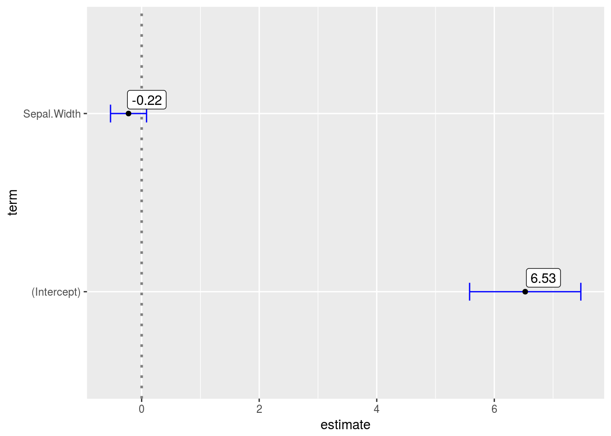
ただし、モデルの推定値としてestimate項、推定値の項目名としてterm項が含まれている必要がありますので、多重比較の場合は描画前にちょっとした前処理が必要な場合もあります。前述のグラフの箱ひげ図をみるとirisデータセットのPetal.WidthがSpeciesにより有意差があるように見えましたので多重比較を用いて確認してみます。
aov(Petal.Width ~ Species, data = iris) %>%
TukeyHSD() %>%
broom::tidy()
多重比較によりSpeciesが異なるとPetal.Widthの大きさが異なっていることが分かります。Petal.Widthの平均値と95％信頼区間を可視化すると下図のようになります。
aov(Petal.Width ~ Species, data = iris) %>%
TukeyHSD() %>%
broom::tidy() %>%
dplyr::select(-term) %>%
dplyr::rename(term = comparison) %>%
GGally::ggcoef(errorbar_color = "blue", errorbar_height = .1)